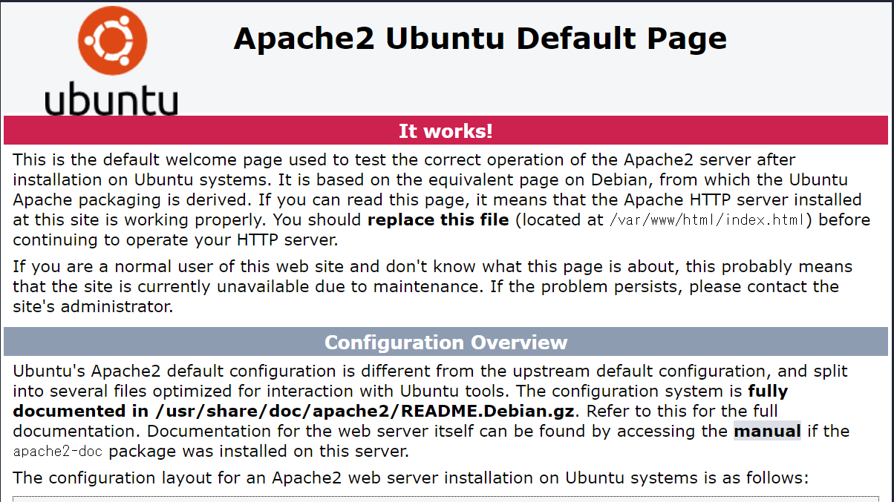

Web Basic
インターネット
インターネットは、1969年に生まれたARPANETから始まり、様々なネットワークが自生的に生まれ相互接続した結果できた、巨大でオープンなネットワークだと言えます。通信規約をオープンにし、相互接続の取り決めを作り、コミュニティにおいて運営する、これがインターネットの相互接続を可能にしてきました。そのオープンな仕組みは様々なネットワークを接続し、巨大なネットワークを作り上げました。これがもたらした恩恵は皆さんの良く知るところだと思います、WebサイトやMailは瞬時に、かつ非同期に、世界に情報を発し、交換することを可能にしました。
一方で、初期のインターネットは問題も抱えていました。もとは性善説に従い、双方を信頼することでこのネットワークは成り立っていましたが時間を経るにつれ様々な悪意により脆弱性を露呈し、攻撃され、結果的に性悪説に基づき再構成されつつあるのが現在の姿のように思えます。とはいえ、それは自生の産物であり、少なくとも、特定の誰かが意図して計画して作り上げた何かではなく、結果的に出来上がった、たとえて言うならば無数の川(小さなネットワーク）が流れ着き、作り上げた、巨大な情報の海だと言えます。以下ではインターネットの基礎技術をできるかぎり平易な言葉で説明できればと思います
パケット
パケットはインターネットにおける通信の最小単位ですが、無数のパケットの往来が通信を作り上げます。およそすべてのデジタル的なものがそうであるように、パケットもまた細切れで、本質的には途切れ途切れです。なぜパケットが細切れになったかというと、もともとの通信帯域が非常に細いなかで、20世紀の電話線の上で1対1のアナログ電話以外の通信をながそうと試みたことから始まります。原理的には糸電話と同じアナログ電話の途切れない波を、途切れ途切れでありながら膨大で無数の信号に置き換えたことでパケットは生まれ、１つの回線を無数の信号が非同期に流れ始めました。通信帯域は共有され、小さなパケットは安価に遠くまで流すことができるようになり、一人対無数の非同期な通信がここにはじまりました。
====================== - ====================== - ======================
IP Header{meta data}#1 IP Header{meta data}#2 IP Header{meta data}#3
====================== - ====================== - ======================
DATA {data seq:1-10} DATA {data seq:11-20} DATA {data seq:21-30}
====================== - ====================== - ======================
TCP/IP
パケット自体は単なる一定の規則性をもった信号にすぎませんが、それが意味ある通信となるにはそれを送信する側と受信する側で一定のルールを共有する必要があります。パケットは同じ送信元と送信先の通信であった場合でも、かならずしも同じ経路をとおりませんし、順序が半ば、ばらばらになって相手側に届くこともあります。また、そのうちのいくつかは経路上でなくなっていることもしばしばです。このパケットを順番に並び変えて一つの意味ある通信にくみ上げるのがTCP/IP(ティーシーピーアイピー)と呼ばれる規約で、その規約の中には途中で消失したパケットを再送することや、そもそも送信先をどうやって識別し、どのようにして目的地までパケットを運ぶかという規約が含まれます。経路上のすべての端末がこの規約をまもることで通信は成立しています。ここに性善説に基づくインターネット通信の原型があります。なお、通信する際には端末を識別する識別情報が必要ですが、TCP/IPではIP(アイピー)アドレスという住所情報をもちいて通信をします。IPアドレスはネットワークに接続するあらゆる端末がもつ識別子として通信を成立させています。
アドレスの名前解決
インターネット上には無数のWebサイトがありますが、サイトはそれぞれ固有のIPアドレスを持っています。ただ、IPアドレス自体は数字のかたまりであり、人が直観的に理解できるような住所ではありません。人が理解できるように.comやwwwといった文字列に変換することを、DNS(ディーエヌエス)による名前解決といいます
Web (ウェブ)
アドレスが特定できたクライアントはWebサイトへ接続しますが、Webサイトはもともとマークアップ言語で記述されたテキストのみを応答として返していました。その実マークアップとはテキストにタグを付与することで装飾するもので、付与されたHTML(エイチティエムエル)タグを読み込みブラウザが表示される文字のサイズやリンクを解釈してデスクトップ上に表現します。
------------------------------------
<h1>Title</h1>
<h2>SubTitle</h2>
<p>contents</p>
<a href="www.XXXX.com">link</a>
------------------------------------
※テキストをtagで囲み、大きさや効果を指定します。hrefは外部サイトへのリンクを定義します
その原理は今も変わらず、Webサイトというのは基本的にはHTMLテキストの塊です。動画や画像もありますが、それらも本質的には文字や数字のかたまりで、それを解釈するアプリケーションによって最終的に動画や画像に変換されます。それらはパケット内のデータ部に詰め込まれ、バラバラになってネットワークを流れたあとで、最終的に受信側で再構成されます。なお、HTMLはもともとハイパーテキストとも呼ばれていましたが、このハイパーテキストどうしがリンクしあった巨大なWeb(蜘蛛の巣)がインターネット、World Wide Webのもともとの意味するところのものでした。
デーモン
あなたのパソコンやスマホがDNSの名前解決リクエストやWebのコンテンツのGETリクエスト送るとき、応答を返しているのはおそらくデーモンと呼ばれるプロセスで、その多くはLinux上で動いています。例えばwindowsはその名のごとくクライアント側のウインドウに様々なアプリを映し出しますが、サーバは黙々と所定のプロトコル(通信規約)に従い、所定の信号を返します。そこではグラフィカルな要素は消え、基本的にはテキスト処理しかなくなります。結果として、コマンドラインインターフェースや非常に容量の小さい設定ファイルなどがデーモンに対する命令を伝えます。
デーモンたちは、暗がりで、非常にまじめに、誰にも気づかれることなく、人には理解できない文字を規約に従い送り続けています。その姿はどこか恐ろしく、どこか神秘的ですらあります。それはデーモンという言葉の本義にあっているのかもしれません。
ハンズオン
以下では手を動かしながらインターネットのミクロな仕組みをデスクトップ上に作っていきます
サーバクッキング
デーモンの姿を理解してもらうためにWebサーバをお手元のLinux上で立ててみましょう。ubuntuにログイン後、aptコマンドでApache HTTP serverをインストールしてください
sudo apt update
sudo apt install apache2
続いて、サーバプロセスを起動しましょう
sudo service apache2 start
apache2デーモンが動いていることはpsコマンドで確認できます
$ ps -ef | grep apache2
root 102 8 0 21:49 ? 00:00:00 /usr/sbin/apache2 -k start
www-data 105 102 0 21:49 ? 00:00:00 /usr/sbin/apache2 -k start
www-data 106 102 0 21:49 ? 00:00:00 /usr/sbin/apache2 -k start
www-data 107 102 0 21:49 ? 00:00:00 /usr/sbin/apache2 -k start
www-data 108 102 0 21:49 ? 00:00:00 /usr/sbin/apache2 -k start
www-data 109 102 0 21:49 ? 00:00:00 /usr/sbin/apache2 -k start
www-data 110 102 0 21:49 ? 00:00:00 /usr/sbin/apache2 -k start
www-data 113 102 0 21:49 ? 00:00:00 /usr/sbin/apache2 -k start
ubuntu 115 9 0 21:53 pts/0 00:00:00 grep --color=auto apache2
IPアドレスの表示
つづいてLinuxサーバのアドレスを確認しましょう。hostname --all-ip-addressesコマンドをうつとサーバのIPアドレスが表示されます。
$ hostname --all-ip-addresses
172.28.9.188
確認できたアドレスをブラウザに入力してWebサーバの動作を確認してみましょう。Apacheのデフォルトページが表示されるはずです
http://172.28.9.180

HTMLクッキング
サーバが立ち上がったら続いて、代表的なtagを使ってHTMLページを追加してみましょう
sudo nano /var/www/html/sample.html
<html>
<head>
<meta charset="UTF-8" />
<title>サンプルページ</title>
</head>
<body>
<h1>ようこそ21世紀IT塾へ</h1>
<h2>目的</h2>
<p>本活動は<b>開かれた</b>IT教育の実施を目的としています</p>
<a href="https://21it.org/">ホームページ</a>
<p>ぜひ楽しみながら学んでください</p>
</body>
</html>
http://{先ほど確認したIPアドレス}/sample.html
以下はよく使われるタグの説明です。その他、HTMLで表現できるtagは多くありますし、cssでスタイルを定義したりjavascriptで動きのあるページを作ることもできます。さらなる美しいサイトを作りたい場合はインターネット上で情報を集めてあなた独自のページを作ってみましょう
html : htmlページであることを宣言します
head : ヘッダー情報を記載します。上記例では言語コードとしてUTF-8を指定し、Titleを記載しています
body : ブラウザ上で表示されるコンテンツをbodyタグの中に記載します
h1 : 見出し（大項目）を記載します
h2 : 見出し（中項目）を記載します
h3 : 見出し（小項目）を記載します
hn : 数字(n)が上がるほど文字が小さくなります
a : リンクを定義します <a href=""></a>のタグを使いhrefにリンク先のURLを記載します
p : 本文を記載します
b : 囲んだ文字を大文字にします
br : 改行します
次章に進む前にapacheサーバは一旦停止しましょう
sudo service apache2 stop
Webサーバのインストールと起動、HTMLサイトの作成を学んでいただきましたが上記はあくまで文章をタグで補完して表現を整えているだけのいわば紙芝居のようなサイトです。次章のsmall shellではデータの出し入れや要求毎の処理の分岐などができる本格的なアプリケーションを作っていきましょう